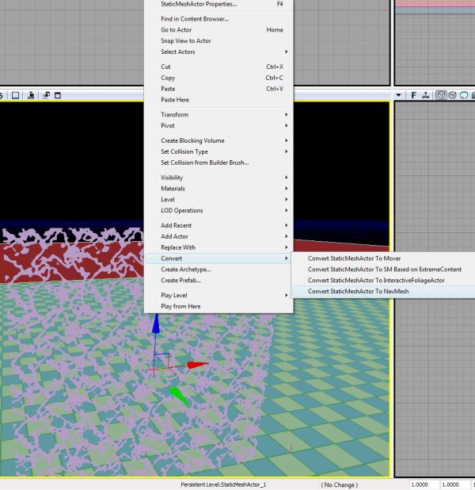
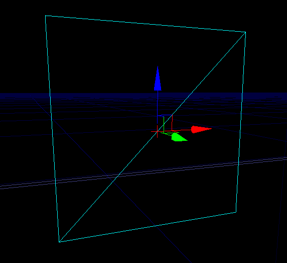
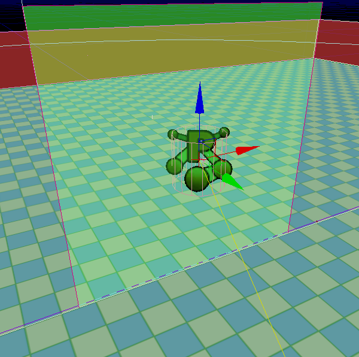
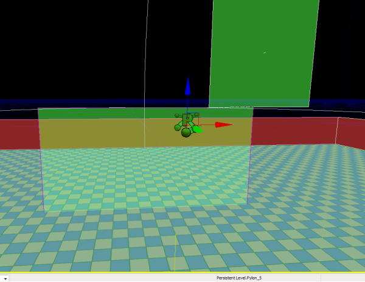
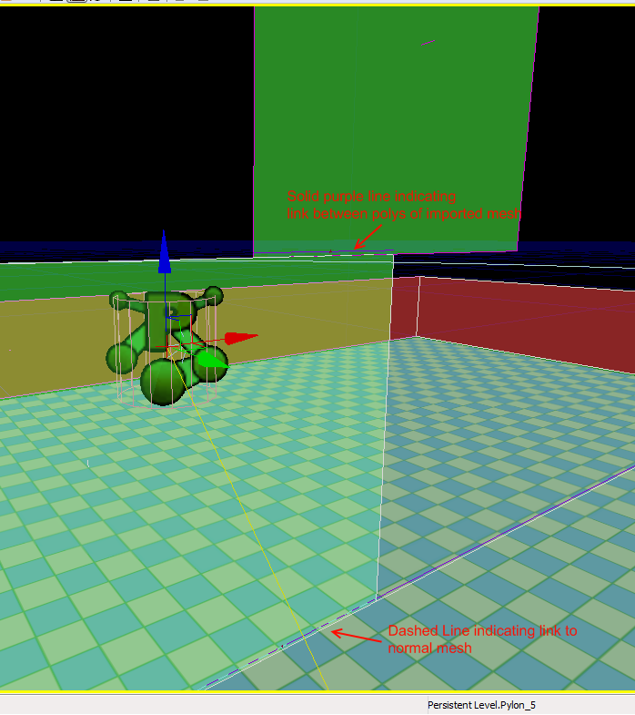

UDN
Search public documentation:
NavMeshManualCreationCH
日本語訳
한국어
Interested in the Unreal Engine?
Visit the Unreal Technology site.
Looking for jobs and company info?
Check out the Epic games site.
Questions about support via UDN?
Contact the UDN Staff
한국어
Interested in the Unreal Engine?
Visit the Unreal Technology site.
Looking for jobs and company info?
Check out the Epic games site.
Questions about support via UDN?
Contact the UDN Staff
手动创建导航网格物体
概述
把静态网格物体转换为导航网格物体

请记住，静态网格物体中的几何体几乎是被完全地使用的，所以背面等也将会进行转换。这里是我们的示例网格物体，它由一个平面和两个三角形组成。

当把它转换为导航网格物体后，您会看到现在网格物体呈现为美丽的绿色和红色的导航网格物体。 注意，那些多余的多边形将会融合到一起。 同时也要注意，这个导入的网格物体还有连接到其它的导航网格物体(自动地创建的导航网格物体)上。 当您添加了您新导入的导航网格物体后，一旦构建路径，将会沿着导入的网格物体的边缘来分隔自动生成的网格物体。正如您在这里所看到的：
当您添加了您新导入的导航网格物体后，一旦构建路径，将会沿着导入的网格物体的边缘来分隔自动生成的网格物体。正如您在这里所看到的：

同时也注意到沿着边界底部的紫色虚线预示着导入的多边形和这些基本的自动生成的多边形之间的连接。把多个静态网格物体转换成一个独立的导入的路标
把几个静态网格物体转换为一个单独的路标是可以实现的。如果您正在从基本形状中草率地把手动创建的网格物体拼凑到一起，那么这个功能是有用的。这对于从一些非常简单的可以通过缩放或排列它们来组成一个大的形状的静态网格物体图形(比如长方形、户型等等)中构建出任意的结构也是特别的有用的 。 要想简单地排列彼此邻近的静态网格物体，只需要全部选中它们并点击转换为导航网格物体即可。这里对于邻近的静态网格物体允许有一些误差。也就是说，它将会尝试把邻近的网格物体拼接到一起，以便它们可以组成一个连续的形状。 这里是把简单的正方形拼接到一起的另一个实例： 转换后的样子：
转换后的样子：

最终路径构建后的效果：
再次说明，紫色的虚线把网格物体连接到一起，而紫色的实线把导入的多边形连接到一起。这些是您在构建您导入的网格物体时需要密切关注的，从而可以保证在网格物体和网格物体多变形之间有正确的连接。